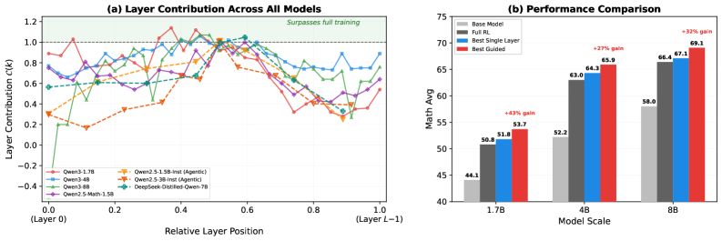
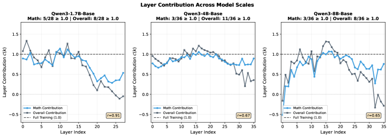

Is One Layer Enough? Single-Layer Training Can Match Full-Parameter RL
TL;DR
- "Is One Layer Enough? Training A Single Transformer Layer Can Match Full-Parameter RL Training" (arXiv 2607.01232; Zijian Zhang, Rizhen Hu, Athanasios Glentis, Dawei Li, Chung-Yiu Yau, Hongzhou Lin, Mingyi Hong) trains every transformer layer of an LLM in isolation with RLVR and finds that the best single layer recovers — and often exceeds — the full gain of full-parameter GRPO, across seven models, three RL algorithms, and math/code/agentic tasks.
- The structure is strikingly stable: high-contribution layers concentrate in the middle of the stack, the profile is an intrinsic property of the pretrained weights (layer rankings correlate across datasets at Spearman ρ=0.76 and even across math→code at ρ=0.59), and it is not explained by weight-change magnitude — full training moves all layers about equally.
- The finding is actionable: freezing everything but the top-10 contribution layers beats tuned full-parameter GRPO by +2.68 on Qwen3-8B (32% of the total RL gain), and a zero-profiling heuristic — just train the middle 5 layers — still beats full-parameter training at every scale tested.
Why this matters
RLVR pipelines default to updating every parameter, implicitly assuming RL improvement is spread across the network. This paper is the most direct test of that assumption to date, and the assumption fails badly: on Qwen3-8B one layer trained alone can beat the whole network trained together (best contribution 1.07), while the worst layer's contribution is negative (−0.51 — training it alone makes the model worse). That asymmetry says RL post-training is not a diffuse process; it is absorbed by a small, structurally consistent set of middle layers.
Two consequences matter for the threads this tracker follows. Practically, this is free money for RL efficiency: layer-selective training reduces optimizer state and gradient communication (only backprop through the full network is still needed), stacks with any algorithm (GRPO, Dr. GRPO, GiGPO were all tested), and the middle-layers heuristic needs no profiling at all. Scientifically, it sharpens the picture of where RL changes a model — complementing logit-level accounts (RL as mostly re-weighting existing behaviors) with a parameter-space account: whatever RLVR adds, a mid-stack layer's subspace is sufficient to express most of it. That has obvious implications for distillation, merging, and for deciding whether a failure needs post-training at all.
The core idea
Take standard GRPO. For prompt \(x\), sample \(G\) responses and compute group-normalized advantages, then maximize the clipped surrogate:
where \(\hat A_i\) is the group-normalized binary-reward advantage, \(\rho_i\) the importance ratio, and \(\pi_{\text{ref}}\) the initial policy. The intervention is minimal: freeze everything except one transformer layer \(\theta_k\),
with the gradient still backpropagated through the full network — only the update is restricted. Repeat independently for every layer \(k\), evaluate each resulting model, and define layer contribution
where \(S_k\), \(S_{\text{base}}\), \(S_{\text{full}}\) are in-domain scores of the layer-\(k\)-trained model, the untrained base, and the full-parameter-trained reference. \(\mathcal{C}(k)=1\) means single-layer training fully matches full RL; \(\mathcal{C}(k)>1\) means it surpasses it.

Figure 1 from the paper: layer contribution vs relative depth for all seven models. The inverted-U is universal — middle layers absorb RL gains; input- and output-adjacent layers barely do.The comparison protocol is unusually careful, which is what makes the headline credible: the learning rate is tuned for the full-parameter baseline and then reused unchanged for every single-layer run (no per-layer advantage), all other hyperparameters are identical, runs are trained to convergence under the same step budget, and public results (Dr. GRPO, GiGPO) anchor the baselines. A learning-rate ablation confirms rankings don't change if layers get their own tuned rate.
How it works
# Phase 1: profile layer contributions
train full-parameter GRPO with tuned lr → S_full
for k in 0..L-1:
freeze all params except layer θ_k (requires_grad=False elsewhere)
train with GRPO, same lr/hparams/steps as full baseline
S_k ← in-domain eval; C(k) ← (S_k − S_base) / (S_full − S_base)
# Phase 2: exploit the profile (three strategies, increasing practicality)
(a) layer-adaptive lr: boost lr ×2 on top-k layers, default elsewhere
(b) layer-selective: train ONLY top-k layers, freeze the rest
(c) heuristic (no profiling): train only the middle k layers
[⌊L/2−k/2⌋, ⌊L/2+k/2⌋)
Scope of the scan. Primary experiments: Qwen3-1.7B/4B/8B-Base (28/36/36 layers), GRPO on NuminaMath-CoT, full per-layer scans — that is one RL run per layer per model. Generality checks: Qwen2.5-Math-1.5B with Dr. GRPO, Qwen2.5-1.5B/3B-Instruct with GiGPO on ALFWorld (agentic), DeepSeek-Distilled-Qwen-7B with GRPO on Skywork math (partial scans). Evaluation spans 12 benchmarks in four categories (Math in-domain; Code, Reasoning, Language out-of-domain).
Key structural findings.
- Middle-layer concentration, everywhere. All seven models show the inverted-U profile. Best/worst contributions: Qwen3-1.7B 1.14/0.28, Qwen3-4B 1.06/0.66, Qwen3-8B 1.07/−0.51, Qwen2.5-Math-1.5B 1.01/0.42, and the agentic ALFWorld runs 1.02/0.25 and 1.01/0.17. Every model has at least one layer with \(\mathcal{C}\geq 1.0\).
- It's a property of the model, not the data. On Qwen3-1.7B, layer rankings from NuminaMath vs DeepScaleR correlate at ρ=0.76; math vs code (DeepCoder) still ρ=0.59. So a cheap profiling run on accessible data transfers to guide training elsewhere.
- Not weight-change magnitude. Under full training, per-layer \(\|\Delta\theta_k\|_2\) is nearly uniform (~0.5–0.8) despite wildly non-uniform contributions; under single-layer training, high- and low-contribution layers move comparably far (~0.8–1.0) yet produce vastly different outcomes. Contribution reflects the effectiveness of a layer's parameter subspace, not how much it moves.
- Out-of-domain gains track in-domain. \(\mathcal{C}_{\text{all}}\) (average over Math/Code/Reasoning/Language) tracks \(\mathcal{C}_{\text{math}}\) with Pearson r>0.6 — single-layer training is not overfitting the training objective.

Figure 2 from the paper: math (blue) and overall (black) layer contribution across Qwen3 scales — layers that learn math well also improve code, reasoning, and language.Results
The exploitation experiments turn the observation into training strategies, on top of an already-tuned full-parameter baseline:
- Layer-adaptive lr (B10 = boost top 10 layers to 1e-5): Qwen3-1.7B 53.70 vs 50.82 baseline (+2.88, i.e. 43% of the entire RL gain added on top); 4B +1.45; 8B +0.99. Boosting the worst layers hurts at every scale — the gain is from contribution-guided selection, not the lr bump.
- Layer-selective training (freeze the rest): the strongest strategy at scale. Qwen3-4B "Only B5" 65.87 (+2.90 over full, 27% of total RL gain); Qwen3-8B "Only B10" 69.11 (+2.68, 32%). Training only the worst layers craters (e.g. 62.04 on 8B). At larger scales, updates to low-contribution layers appear to be actively counterproductive — freezing them yields cleaner optimization.
- Heuristic middle-k (no profiling): middle-5 layers beat full-parameter at all scales — 1.7B 51.35 vs 50.82, 4B 64.80 vs 62.97 (+1.83), 8B 68.19 vs 66.43 (+1.76) — capturing most of the profiled strategy's benefit for free.
- Complementarity bonus: top-7 layer-trained models on Qwen3-1.7B solve largely different problems (mean pairwise Jaccard 34.1% on newly-solved OlympiadBench items). Majority-voting the seven models reaches 33.6% vs 28.3% for the best single one, 26.9% for full-parameter, and 31.3% for 7-sample self-consistency from one model — structural diversity beats sampling diversity. (The authors flag this as analysis, not a practical recipe.)
How it connects
This is the parameter-space companion to the optimizer-level work in "ISO: An RLVR-Native Optimization Stack" — both argue that treating RLVR as generic full-network fine-tuning wastes structure, one in the update rule, the other in where updates land. The compute-allocation question interacts with "Scaling Law for Pretrain vs RL Compute Allocation": if RL gains are absorbable by ~1/28th of parameters, the marginal cost of an RL point is lower than full-parameter accounting suggests. The finding that mid-stack subspaces suffice for RL deltas is highly suggestive for the delta-transfer methods in "OPD-Squared: On-Policy Delta Distillation" (distill the delta; this paper says the delta is low-dimensional and localizable). The layer-ensemble diversity result is a structured version of the diversity arguments in "Skill Entropy: Benchmarking and Training Skill Switching". And for the model-vs-harness triage question ("Model or Harness: Attributing 41 Agent Failure Modes"), cheap localized post-training changes the economics of the "fix the model" branch: the GiGPO/ALFWorld result shows single-layer RL works for agentic tasks too.
Critical take
The efficiency framing needs qualification: single-layer training still backpropagates through the whole network, so the savings are optimizer state, weight-update compute, and communication — not the backward pass. All seven models are Qwen-family (Qwen2.5/Qwen3 and a DeepSeek distill of Qwen), 1.5B–8B; "middle 40–60%" could partially be a Qwen pretraining signature, and the tweet's "7 models, 3 algorithms" is within-family evidence, not cross-family. The paper measures RLVR-style short-horizon reward regimes; whether long-horizon agentic RL with dense/turn-level rewards concentrates the same way is untested beyond ALFWorld with partial scans. There's also a selection subtlety: contribution is measured against a full-parameter baseline whose gain \(S_{\text{full}}-S_{\text{base}}\) is sometimes modest; \(\mathcal{C}(k)>1\) is easier when the denominator is small (the 8B worst layer at −0.51 shows how noisy isolated-layer outcomes can be). Finally the profiling cost is real — one RL run per layer — which is why the middle-layers heuristic is the result most likely to be used in practice; a cheap predictor of layer contribution (from activations or a few gradient steps) is the obvious missing piece.
If you remember three things
- RL post-training gains are localized, not diffuse: one mid-stack transformer layer, trained alone under a fair protocol, matches or beats full-parameter GRPO across seven Qwen-family models, three algorithms, and math/code/agentic tasks.
- The contribution profile is an intrinsic property of the pretrained model — stable across datasets and even tasks (ρ=0.76 math↔math, 0.59 math↔code) — and is not explained by how much layers move during training.
- You can cash this in without profiling: train only the middle ~5 layers and beat tuned full-parameter RLVR at every scale tested (+1.8/+1.8 points at 4B/8B); with profiling, freezing low-contribution layers recovers ~30% extra of the total RL gain.